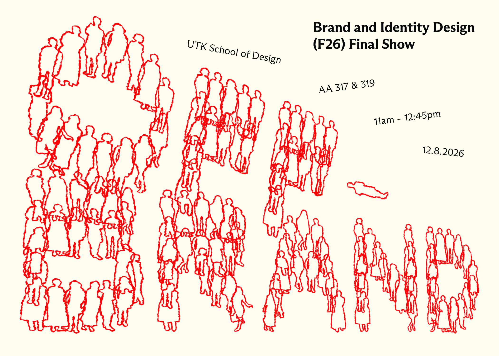

Off-Brand
Brand and Identity Design (F26) Final Show. UTK School of Design. AA 317 & 319. 11am – 12:45pm. 12.8.2026.
GRDS 471 / F26
To build a brand is to build a world. In this course, 4th year students built worlds around a social purpose, bootlegged existing identities, and speculated scenarios for 2050. Off-Brand presents three projects that test the boundaries of what we call a brand.
Instructor: Stacy Danbee Kim
Students
- Callie Butler
- Amari Evans
- Kennedy Gaertner
- Rachel Lawrence
- Ashlynn Lee
- Lola Lowe
- Tallulah Mooney
- Tess Mullen
- Brooke Russo
- Audrey Sehorn
- Ava Thoeny
- Cora Williams
Project 1 — Purpose-driven branding: What can a brand do?
How can a brand serve people rather than the system? Each student paired a brand with a social purpose rooted in the UN’s Sustainable Development Goals (SDGs), and built an identity around what it stands for.
Project 2 — B00tleg: Who does a brand belong to?
Drawing on contemporary bootleg culture (e.g., Bootboyz Biz, Experimental Jetset), students took artifacts from existing brands as raw material to challenge, celebrate, or reclaim their meanings.
Project 3 — Y2K50: What can a brand be?
Students investigated signals from today, such as shifts in technology, climate, or how we live, and designed what people might need in a speculative 2050. Together, their ideas and artifacts form a constellation of possible futures.